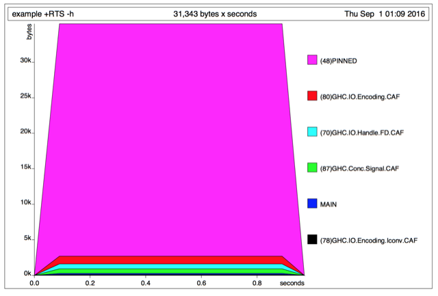
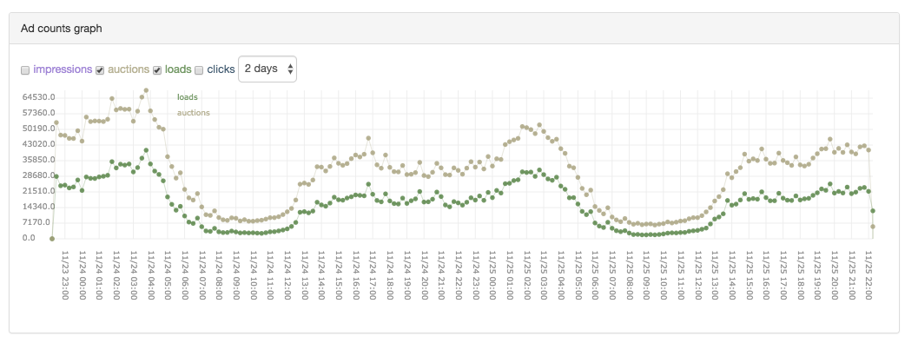

algebird , див MuniHac 2016: Beautiful folds are practical, too xxxxxxxxxxλ :{Prelude Data.List Data.List| sum :: (Num a) => [a] -> aPrelude Data.List Data.List| sum = foldl' (+) 0Prelude Data.List Data.List| :}>>> genericLength [1..100000000]100000000>>> sum [1..100000000]5000000050000000>>> let average xs = sum xs / genericLength xs>>> average [1..100000000]<Huge space leak> xxxxxxxxxxmean :: [Double] -> Doublemean = go 0 0 where go s l [] = s / fromIntegral l go s l (x:xs) = s `seq` l `seq` go (s+x) (l+1) xs xxxxxxxxxxfoldl' :: (a -> b -> a) -> a -> [b] -> adata Fold b c = forall a. F (a -> b -> a) a (a -> c)data Fold b a = F (a -> b -> a) adata Fold i o = forall m . Monoid m => Fold (i -> m) (m -> o)Імплементація в 14 строк Хаскеля:
xxxxxxxxxximport Control.Lens (Getting, foldMapOf)data Fold i o = forall m . Monoid m => Fold (i -> m) (m -> o)instance Functor (Fold i) where fmap k (Fold tally summarize) = Fold tally (k . summarize)instance Applicative (Fold i) where pure o = Fold (\_ -> ()) (\_ -> o) Fold tallyF summarizeF <*> Fold tallyX summarizeX = Fold tally summarize where tally i = (tallyF i, tallyX i) summarize (mF, mX) = summarizeF mF (summarizeX mX)focus :: (forall m . Monoid m => Getting m b a) -> Fold a o -> Fold b ofocus lens (Fold tally summarize) = Fold (foldMapOf lens tally) summarize xxxxxxxxxximport Data.Monoidimport Prelude hiding (sum)import qualified Data.Foldabledata Fold i o = forall m . Monoid m => Fold (i -> m) (m -> o)fold :: Fold i o -> [i] -> ofold (Fold tally summarize) is = summarize (reduce (map tally is)) where reduce = Data.Foldable.foldl' (<>) memptysum :: Num n => Fold n nsum = Fold Sum getSum xxxxxxxxxx>>> fold sum [1..10]55main :: IO () main = print (fold sum [(1::Int)..1000000000])
xxxxxxxxxx$ time ./example # 0.3 ns / elem500000000500000000real 0m0.322suser 0m0.316ssys 0m0.003s xxxxxxxxxxprint (fold sum [1, 2, 3, 4])-- sum = Fold Sum getSum= print (fold (Fold Sum getSum) [1, 2, 3, 4])-- fold (Fold tally summarize) is = summarize (reduce (map tally is))= print (getSum (reduce (map Sum [1, 2, 3, 4])))-- reduce = foldl' (<>) mempty= print (getSum (foldl' (<>) mempty (map Sum [1, 2, 3, 4])))-- Definition of `map` (skipping a few steps)= print (getSum (foldl' (<>) mempty [Sum 1, Sum 2, Sum 3, Sum 4]))-- `foldl' (<>) mempty` (skipping a few steps)= print (getSum (mempty <> Sum 1 <> Sum 2 <> Sum 3 <> Sum 4))-- mempty = Sum 0= print (getSum (Sum 0 <> Sum 1 <> Sum 2 <> Sum 3 <> Sum 4))-- Sum x <> Sum y = Sum (x + y)= print (getSum (Sum 10))-- getSum (Sum x) = x= print 10 xxxxxxxxxxdata Average a = Average { numerator :: !a, denominator :: !Int }instance Num a => Monoid (Average a) where mempty = Average 0 0 mappend (Average xL nL) (Average xR nR) = Average (xL + xR) (nL + nR)-- Not a numerically stable average, but humor meaverage :: Fractional a => Fold a aaverage = Fold tally summarize where tally x = Average x 1 summarize (Average numerator denominator) = numerator / fromIntegral denominator xxxxxxxxxx>>> fold average [1..10]5.5 xxxxxxxxxxmain :: IO ()main = print (fold average (map fromIntegral [(1::Int)..1000000000])) xxxxxxxxxx$ time ./example # 1.3 ns / elem5.00000000067109e8real 0m1.251suser 0m1.237ssys 0m0.005sНаша average працює за константну пам’ять:

xxxxxxxxxxprint (fold average [1, 2, 3])-- average = Fold tally summarize= print (fold (Fold tally summarize ) [1, 2, 3])-- fold (Fold tally summarize) is = summarize (reduce (map tally is))= print (summarize (reduce (map tally [1, 2, 3])))-- reduce = foldl' (<>) mempty= print (summarize (foldl' (<>) mempty (map tally [1, 2, 3])))-- Definition of `map` (skipping a few steps)= print (summarize (foldl' (<>) mempty [tally 1, tally 2, tally 3]))-- tally x = Average x 1= print (summarize (mconcat [Average 1 1, Average 2 1, Average 3 1]))-- `foldl' (<>) mempty` (skipping a few steps)= print (summarize (mempty <> Average 1 1 <> Average 2 1 <> Average 3 1))-- mempty = Average 0 0= print (summarize (Average 0 0 <> Average 1 1 <> Average 2 1 <> Average 3 1))-- Average xL nL <> Average xR nR = Average (xL + xR) (nL + nR)= print (summarize (Average 6 3))-- summarize (Average numerator denominator) = numerator / fromIntegral denominator= print (6 / fromIntegral 3)FoldиВсе в Data.Monoid можна загорнути в Fold
xxxxxxxxxximport Prelude hiding (head, last, all, any, sum, product, length)head :: Fold a (Maybe a)head = Fold (First . Just) getFirstlast :: Fold a (Maybe a)last = Fold (Last . Just) getLastall :: (a -> Bool) -> Fold a Boolall predicate = Fold (All . predicate) getAllany :: (a -> Bool) -> Fold a Boolany predicate = Fold (Any . predicate) getAnysum :: Num n => Fold n nsum = Fold Sum getSumproduct :: Num n => Fold n nproduct = Fold Product getProductlength :: Num n => Fold i nlength = Fold (\_ -> Sum 1) getSum xxxxxxxxxx>>> fold head [1..10]Just 1>>> fold last [1..10]Just 10>>> fold (all even) [1..10]False>>> fold (any even) [1..10]True>>> fold sum [1..10]55>>> fold product [1..10]3628800>>> fold length [1..10]10Експоненційне ковзне середнє у вигляді Foldу:
xxxxxxxxxxdata EMA a = EMA { samples :: !Int, value :: !a }instance Fractional a => Monoid (EMA a) where mempty = EMA 0 0 mappend (EMA nL xL) (EMA 1 xR) = EMA n x -- Optimize common case where n = nL + 1 x = xL * 0.7 + xR mappend (EMA nL xL) (EMA nR xR) = EMA n x where n = nL + nR x = xL * (0.7 ^ nR) + xRema :: Fractional a => Fold a aema = Fold tally summarize where tally x = EMA 1 x summarize (EMA _ x) = x * 0.3 xxxxxxxxxx>>> fold ema [1..10]7.732577558099999 xxxxxxxxxxmain :: IO ()main = print (fold ema (map fromIntegral [(1::Int)..1000000000])) xxxxxxxxxx$ time ./example # 2.6 ns / elem9.999999976666665e8real 0m2.577suser 0m2.562ssys 0m0.009sТипове питання, що виникає — "оцінити кількість унікальних відвідувачів"
Наївне рішення:
xxxxxxxxxximport Data.Set (Set)import qualified Data.Setuniques :: Ord i => Fold i Intuniques = Fold Data.Set.singleton Data.Set.size... потребує багато пам’яті
... погано для великих даних
Алгоритм HyperLogLog дає приблизну оцінку кардинальності
Спрощене пояснення на Хаскелі:
xxxxxxxxxximport Data.Word (Word64)import qualified Data.Bitsnewtype Max a = Max { getMax :: a }instance (Bounded a, Ord a) => Monoid (Max a) where mempty = Max minBound mappend (Max x) (Max y) = Max (max x y)uniques :: (i -> Word64) -> Fold i Intuniques hash = Fold tally summarize where tally x = Max (fromIntegral (Data.Bits.countLeadingZeros (hash x)) :: Word64) summarize (Max n) = fromIntegral (2 ^ n)Справжня версія набагато більш "дужа" (Див hyperloglog від E. Kmett)
xxxxxxxxxxmain :: IO ()main = print (fold (uniques id) (take 1000000000 (cycle randomWord64s)))randomWord64s :: [Word64]randomWord64s = [11244654998801660968,16946641599420530603,652086428930367189,5128055280221172986,16587432539185930121,2228570544497248004,1689089568130731485,1818807721542935601,2077177117099267269,8187447654250279125] xxxxxxxxxx$ time ./example # 5.5 ns / elem16real 0m5.543suser 0m5.526ssys 0m0.007sДеякі ідеї, що вкрадено зі Скала-бібліотеки algebird
Quantile digests (for medians, percentiles, histograms)
algebird calls these QTreesCount-min sketch (for top N most frequently occurring items)
algebird generalizes this as SketchMapsStochastic gradient descent (for linear regression)
algebird calls this SGDBloom filters (for approximate membership testing)
algebird calls this BFalgebird's version of Fold is called Aggregator
FoldиУявімо, що ми хочемо зкомбінувати два Foldи в один
Ми би зробили щось типу:
xxxxxxxxxxcombine :: Fold i a -> Fold i b -> Fold i (a, b)combine (Fold tallyL summarizeL) (Fold tallyR summarizeR) = Fold tally summarize where tally x = (tallyL x, tallyR x) summarize (sL, sR) = (summarizeL sL, summarizeR sR) xxxxxxxxxx>>> fold (combine sum product) [1..10](55,3628800)ApplicativeМожемо узагальнити combine написавши інстанс Fold для Applicative
xxxxxxxxxxinstance Functor (Fold i) where fmap k (Fold tally summarize) = Fold tally (k . summarize)instance Applicative (Fold i) where pure o = Fold (\_ -> ()) (\_ -> o) Fold tallyF summarizeF <*> Fold tallyX summarizeX = Fold tally summarize where tally i = (tallyF i, tallyX i) summarize (mF, mX) = summarizeF mF (summarizeX mX)Ми хочемо, аби внутрішній Monoid був строгим Pair:
xxxxxxxxxxdata Pair a b = P !a !binstance (Monoid a, Monoid b) => Monoid (Pair a b) where mempty = P mempty mempty mappend (P aL bL) (P aR bR) = P (mappend aL aR) (mappend bL bR)data Fold i o = forall m . Monoid m => Fold (i -> m) (m -> o)instance Functor (Fold i) where fmap k (Fold tally summarize) = Fold tally (k . summarize)instance Applicative (Fold i) where pure o = Fold (\_ -> ()) (\_ -> o) Fold tallyF summarizeF <*> Fold tallyX summarizeX = Fold tally summarize where tally i = P (tallyF i) (tallyX i) summarize (P mF mX) = summarizeF mF (summarizeX mX)Це дозволить використовувати seq замість deepseq
Тепер ми можемо написати:
xxxxxxxxxxcombine :: Fold i a -> Fold i b -> Fold i (a, b)combine = liftA2 (,)... що має більш узагальнений тип:
xxxxxxxxxxcombine :: Applicative f => f a -> f b -> f (a, b)Альтернативно, можемо використовувати Applicative напряму:
xxxxxxxxxx>>> fold ((,) <$> sum <*> product) [1..10](55,3628800)Порівняйте дві функції:
xxxxxxxxxxbad :: [Double] -> (Double, Double)bad xs = (Prelude.sum xs, Prelude.product xs)good :: [Double] -> (Double, Double)good xs = fold ((,) <$> sum <*> product) xsЯка проблема в першої з них?
ApplicativeиМожемо використовувати Applicative-інстанси не тільки для пар:
xxxxxxxxxxsum :: Num n => Fold n nsum = Fold Sum getSumlength :: Num n => Fold i nlength = Fold (\_ -> Sum 1) getSumaverage :: Fractional n => Fold n naverage = (/) <$> sum <*> lengthГенерує код, еквівалентний average, написаному "вручну":
xxxxxxxxxxmain :: IO ()main = print (fold average (map fromIntegral [(1::Int)..1000000000])) xxxxxxxxxx$ time ./example # 1.3 ns / elem5.00000000067109e8real 0m1.281suser 0m1.266ssys 0m0.006sNumМожемо надати інстанси Fold класам Num, Fractional та Floating!
xxxxxxxxxxinstance Num b => Num (Fold a b) where fromInteger n = pure (fromInteger n) negate = fmap negate abs = fmap abs signum = fmap signum (+) = liftA2 (+) (*) = liftA2 (*) (-) = liftA2 (-)instance Fractional b => Fractional (Fold a b) where fromRational n = pure (fromRational n) recip = fmap recip (/) = liftA2 (/)instance Floating b => Floating (Fold a b) where pi = pure pi exp = fmap exp sqrt = fmap sqrt log = fmap log sin = fmap sin tan = fmap tan cos = fmap cos asin = fmap sin atan = fmap atan acos = fmap acos sinh = fmap sinh tanh = fmap tanh cosh = fmap cosh asinh = fmap asinh atanh = fmap atanh acosh = fmap acosh (**) = liftA2 (**) logBase = liftA2 logBaseFoldиМожемо робити круті штуки:
xxxxxxxxxx>>> fold (length - 1) [1..10]9>>> let average = sum / length>>> fold average [1..10]5.5>>> fold (sin average ^ 2 + cos average ^ 2) [1..10]1.0>>> fold 99 [1..10]99Формула стандартного відхилення:
Еквівалент через Fold читається майже так само просто, як остання формула:
xxxxxxxxxxstandardDeviation :: Floating n => Fold n nstandardDeviation = sqrt ((sumOfSquares / length) - (sum / length) ^ 2) where sumOfSquares = Fold (Sum . (^2)) getSum xxxxxxxxxx>>> fold standardDeviation [1..100]28.86607004772212ListTListT із пакету list-transformers визначено так:
xxxxxxxxxxnewtype ListT m a = ListT { next :: m (Step m a) }data Step m a = Cons a (ListT m a) | NilМожемо його згорнути!
xxxxxxxxxximport List.Transformer (ListT(..), Step(..))import qualified System.IOfoldListT :: Monad m => Fold i o -> ListT m i -> m ofoldListT (Fold tally summarize) = go mempty where go !m l = do s <- next l case s of Nil -> return (summarize m) Cons x l' -> go (mappend m (tally x)) l'Можемо таким чином згорнути "effectful streams":
xxxxxxxxxxstdin :: ListT IO Stringstdin = ListT (do eof <- System.IO.isEOF if eof then return Nil else do line <- getLine return (Cons line stdin) )main :: IO ()main = do n <- foldListT length stdin print n xxxxxxxxxx$ yes | head -10000000 | ./example10000000Можемо таким самим чином згорнути:
conduitio-streamslist-tlogictmachinespipesturtleКожен Fold може бути перевикористаним в будь-якій із цих систем
xxxxxxxxxximport Control.Lens (Getting, foldMapOf)focus :: (forall m . Monoid m => Getting m b a) -> Fold a o -> Fold b ofocus lens (Fold tally summarize) = Fold tally' summarize where tally' = foldMapOf lens tally xxxxxxxxxxfocus _1 :: Fold i o -> Fold (i, x) ofocus _Just :: Fold i o -> Fold (Maybe i) o xxxxxxxxxxitems1 :: [Either Int String]items1 = [Left 1, Right "Hey", Right "Foo", Left 4, Left 10] xxxxxxxxxx>>> fold (focus _Left sum) items115>>> fold (focus _Right length) items12 xxxxxxxxxxitems2 :: [Maybe (Int, String)]items2 = [Nothing, Just (1, "Foo"), Just (2, "Bar"), Nothing, Just (5, "Baz")] xxxxxxxxxx>>> fold (focus (_Just . _1) product) items210>>> fold (focus _Nothing length) items22 xxxxxxxxxxdata DsAdBid a = DsAdBid { _abImpressionId :: ImpressionId , _abDelay :: Maybe PageLoadDelay , _abDsAccountId :: DsAccountId , _abAdregionId :: AdregionId , _abBid :: Bid , _abCreativeCore :: Maybe Cr.CreativeCore } deriving (Show, Eq, Generic)data CreativeCore = CreativeCore { _coreTitle :: Maybe Title , _coreDescription :: Maybe Description , _coreSponsor :: Maybe Sponsor , _coreImgURL :: Maybe (Valid RawURL) } deriving (Eq, Generic, Show) xxxxxxxxxx-- | Count eventscountFold :: (Hashable k, Eq k) => (ev -> Maybe k) -> L.Fold ev (MonoidalHashMap k (Sum Integer))countFold keyF = L.Fold s mempty id incr where incr m ev = m (\k -> M.modify (+1) k m) (keyF ev) xxxxxxxxxx-- | SELECT GROUPKEY(round_one_hour(timestamp)),-- count()-- FROM ds_ad_load_eventsprocessCountLoadsPerHour :: Mode -> IO ()processCountLoadsPerHour mode = void . runConsumerInMode mode $ do let kf ev = Just (rewindToHour (ev ^. timestamp)) let (EvProducer prod) = evProducerW start end res <- purelyFold (countFold kf) (prod :: EventProducer (Event DsAdLoad)) liftIO (print res) -- :: MonoidalHashMap KeyDsAdregion (Sum Integer) xxxxxxxxxx-- | SELECT GROUPKEY(ds_id, adregion_id, round5min(timestamp)),-- count(ds_ad_load_events)-- earnings(ds_ad_load_events)-- count(ds_click_events)-- FROM ds_ad_load_events, ds_click_eventsprocessCountLoadsAndClicksAndEarningsConcurrent :: Mode -> IO ()processCountLoadsAndClicksAndEarningsConcurrent mode = void . runConsumerInMode mode $ do (KeyFunction kf) <- getKeyFunctionDsAdregion let (EvProducer prod) = evProducerW start end ((lc,le),cc) <- concurrently2 (purelyFold ((,) <$> countFold kf <*> earningsFold kf) (prod :: EventProducer (Event DsAdLoad))) (purelyFold (countFold kf) (prod :: EventProducer (Event DsClick))) liftIO (print (mhmZip3 lc le cc)) -- :: MonoidalHashMap KeyDsAdregion (Sum Integer, Sum MoneyAmount, -- Sum Integer)type KeyAdregionDs = (AdregionId, DsProviderId, UTCTime)getKeyFunctionDsAdregion :: Consumer (KeyFunction KeyAdregionDs)keyFunctionAdregionDs :: KeyConstraints KeyAdregionDs ev => HashMap DsAccountId DsProviderId -> (ev -> Maybe KeyAdregionDs)keyFunctionAdregionDs dsMap event = do let accountID = event ^. dsAccountId dsID <- H.lookup accountID dsMap let region = event ^. adregionId let timekey = rewindTo5Min (event ^. timestamp) return (region, dsID, timekey) xxxxxxxxxxdata Report label = Report { scope :: label , timeseries :: MonoidalHashMap UTCTime ReportPayload } deriving (Show, Eq)data ReportPayload = ReportPayload { loads :: !(Sum Integer) , impressions :: !(Sum Integer) , clicks :: !(Sum Integer) , ctr :: !(Avg Double) , earnings :: !(Sum MoneyAmount) , avgEarnings :: !(Avg MoneyAmount) , avgEarningsCpc :: !(Avg MoneyAmount)} deriving (Show, Eq, Generic)Foldи для складніших репортів xxxxxxxxxxprocessStats = do aggs <- aggregateEventStreams dsMap (evProducer startTime endTime :: EventProducer (Event DsAdLoad)) (evProducer startTime endTime :: EventProducer (Event DsImpression)) (evProducer startTime endTime :: EventProducer (Event DsClick)) (evProducer startTime endTime :: EventProducer (Event DsAvailabilityCheck)) (evProducer startTime endTime :: EventProducer (Event DsAdAvail)) (evProducer startTime endTime :: EventProducer (Event DsAdUnavail)) (evProducer startTime endTime :: EventProducer (Event DsAdError)) (evProducer startTime endTime :: EventProducer (Event DsCookieSync)) where ... xxxxxxxxxx impFold :: PayloadFold (Event DsImpression) impFold = mkBaseFold impressionsL countFold <> mkBaseFold ctrL ctrFold clickFold :: PayloadFold (Event DsClick) clickFold = mkBaseFold clicksL countFold <> mkBaseFold ctrL ctrFold